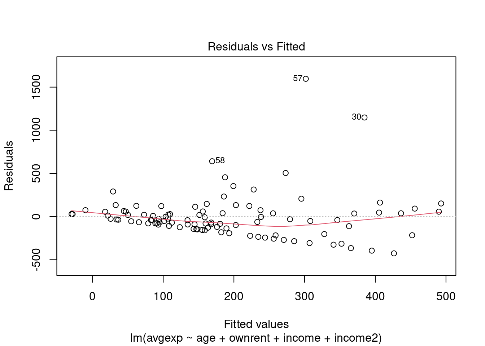
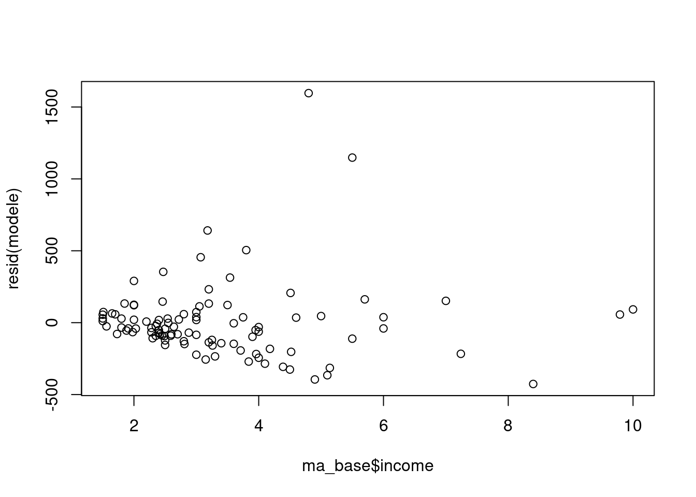
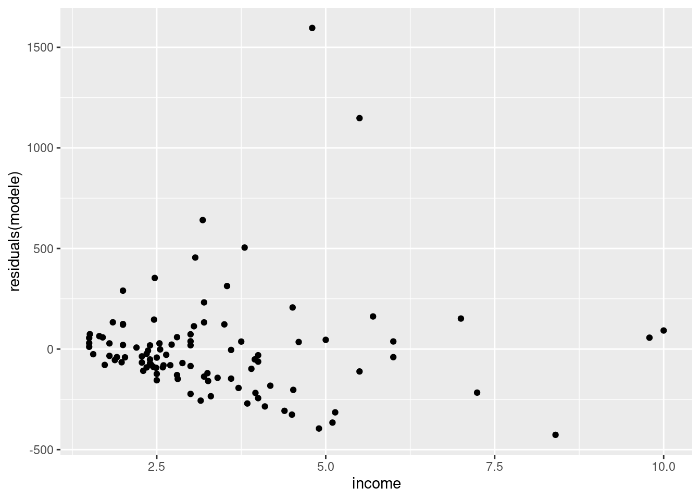

6 Traitement de l’hétéroscédasticité
6.1 Introduction
Les hypothèses habituelles des MCO supposent que les termes d’erreur \(\epsilon_i\) sont homoscédastiques, c’est-à-dire que leur variance est constante, et ne dépend pas des caractéristiques individuelles : \(Var(\epsilon_i)=\sigma^2~\forall i\). Elles supposent également que les covariances entre termes d’erreur sont nulles : \(Cov(\epsilon_i,\epsilon_j)=0~\forall i\neq j\). Ces deux hypothèses (dites de “sphéricité” des termes d’erreur) assurent que l’estimateur des MCO est de variance minimale parmi les estimateurs linéaires sans biais (MCO est BLUE) ; et permet un mode de calcul simple de la matrice de variance-covariance des \(\hat\beta\) : \(V(\hat\beta)=\sigma^2(X'X)^{-1}\).
L’hétéroscédasticité est la violation de l’hypothèse d’homoscédasticité. On parle d’hétéroscédasticité lorsque la variance des termes d’erreur n’est pas constante : \(Var(\epsilon_i)=\sigma^2_i\). Dans cette section, on continue à considérer que les termes d’erreurs ne sont pas corrélés entre eux.
6.2 Détection de l’hétéroscédasticité
On détecte la présence d’hétéroscédasticité à l’aide d’analyse graphique d’une part, et de tests statistiques d’autre part.
Commençons par charger des données, et faire une régression dont on analysera les résultats. La base de données “TableF9-2.csv” contient 100 observations sur la dépense en logement (avgexp), l’age, la statut d’occupation (ownrent) et le revenu (income) et son carré (income2). On va régresser la dépense en logement sur ces variables, et étudier la présence d’hétéroscédasticité
library(readr)
ma_base <- read_csv("https://raw.githubusercontent.com/ATerracol/P8Econ/master/data/TableF9-2.csv")
modele <- lm(data=ma_base,avgexp ~ age + ownrent + income + income2)
smodele <- summary(modele)
smodele##
## Call:
## lm(formula = avgexp ~ age + ownrent + income + income2, data = ma_base)
##
## Residuals:
## Min 1Q Median 3Q Max
## -426.40 -120.82 -38.30 56.95 1596.32
##
## Coefficients:
## Estimate Std. Error t value Pr(>|t|)
## (Intercept) -115.991 157.831 -0.735 0.4642
## age -3.654 3.752 -0.974 0.3326
## ownrent 60.881 61.949 0.983 0.3282
## income 156.467 63.954 2.447 0.0163 *
## income2 -9.076 6.202 -1.463 0.1467
## ---
## Signif. codes: 0 '***' 0.001 '**' 0.01 '*' 0.05 '.' 0.1 ' ' 1
##
## Residual standard error: 272.2 on 95 degrees of freedom
## Multiple R-squared: 0.1788, Adjusted R-squared: 0.1443
## F-statistic: 5.173 on 4 and 95 DF, p-value: 0.00081796.2.1 Analyse graphique des résidus
Les résidus de la régression étant des estimations des termes d’erreur, on se base sur ces résidus pour étudier la présence d’hétéroscédasticité
# graphique des résidus contre valeurs prédites
plot(modele,which=1 )
# graphique des résidus contre la variable explicative "income"
plot(ma_base$income,resid(modele))
# Idem, avec ggplot2
library(ggplot2)
ggplot(data=ma_base) +
geom_point(aes(x=income,y=residuals(modele)))
On voit que, si le graphique des résidus contre les valeurs prédites n’est pas forcément très clair, celui contre la variable “income” semble indiquer la présence d’hétéroscédasticité : la variance des résidus semble augmenter avec les valeurs de la variable de revenu “income”. Celà semble logique dans la mesure où un niveau de revenu plus élevé donnee accès à une gamme de logement de prix plus varié, et donc on s’attend à ce que la variation des dépenses de logement soit plus forte pour les revenus les plus élevés, même à âge et à statut d’occupation donné.
6.2.2 Test de Breusch-Pagan
Le test de Breusch-Pagan est un test statistique permettant de détecter la présence d’hétéroscédasticité sous l’hypothèse que \(Var(\epsilon_i)=\sigma^2(\alpha_0+\boldsymbol{\alpha z})\) où \(\boldsymbol{z}\) est un vecteur de variable à la source de l’hétéroscédasticité. L’hypothèse nulle est que \(\boldsymbol{\alpha}=\boldsymbol{0}\), c’est-à-dire l’absence d’hétéroscédasticité. On peut effectuer ce test à l’aide de la commande bptest issue du paquet lmtest
library(lmtest)
bptest(modele)##
## studentized Breusch-Pagan test
##
## data: modele
## BP = 7.2289, df = 4, p-value = 0.1243Ici, le test n’est pas très concluant (p-value >0.1)
Par contre, en spécifiant qu’on se concentre sur les variables de revenu pour tester l’hétéroscédasticité (avec l’option varformula) :
bptest(modele, varformula = ~ income + income2, data=ma_base)##
## studentized Breusch-Pagan test
##
## data: modele
## BP = 6.813, df = 2, p-value = 0.03316on rejette maintenant \(H0\) au niveau \(\alpha=5 \%\) et on conclut à la présence d’hétéroscédasticité.
6.3 Correction de White
Une façon de corriger de la présence d’hétéroscédasticité dans un modèle est non pas de chercher à rendre les termes d’erreur sphérique, mais de chercher à calculer correctement la matrice de variance-covariance des \(\hat\beta\). La méthode usuelle est celle de White, dans sa variante dite “HC1”.
Il existe plusieurs paquets permettant d’effectuer cette correction dans R. nous en présentons quelques uns ici :
Commençons par estimer le modèle sans correction, sauvegardons le dans un objet nommé modele, et affichons son summary :
modele <- lm(data=ma_base,avgexp ~ age + ownrent + income + income2)
smodele <- summary(modele)
smodele##
## Call:
## lm(formula = avgexp ~ age + ownrent + income + income2, data = ma_base)
##
## Residuals:
## Min 1Q Median 3Q Max
## -426.40 -120.82 -38.30 56.95 1596.32
##
## Coefficients:
## Estimate Std. Error t value Pr(>|t|)
## (Intercept) -115.991 157.831 -0.735 0.4642
## age -3.654 3.752 -0.974 0.3326
## ownrent 60.881 61.949 0.983 0.3282
## income 156.467 63.954 2.447 0.0163 *
## income2 -9.076 6.202 -1.463 0.1467
## ---
## Signif. codes: 0 '***' 0.001 '**' 0.01 '*' 0.05 '.' 0.1 ' ' 1
##
## Residual standard error: 272.2 on 95 degrees of freedom
## Multiple R-squared: 0.1788, Adjusted R-squared: 0.1443
## F-statistic: 5.173 on 4 and 95 DF, p-value: 0.00081796.3.1 Les paquets lmtest et sandwich
le paquet sandwich fournit la commande vcovHCqui corrige la matrice de variance covariance, tandis que le paquet lmtest fournit la commande coeftest qui permet d’utiliser cette dernière pour construire un tableau de résultat corrigé.
library(lmtest)
library(sandwich)
modele_robust <- coeftest(modele, vcov = vcovHC(modele, type = "HC1"))
modele_robust##
## t test of coefficients:
##
## Estimate Std. Error t value Pr(>|t|)
## (Intercept) -115.9914 151.9929 -0.7631 0.4473
## age -3.6537 2.4463 -1.4936 0.1386
## ownrent 60.8815 67.8642 0.8971 0.3719
## income 156.4672 73.0671 2.1414 0.0348 *
## income2 -9.0760 6.1422 -1.4776 0.1428
## ---
## Signif. codes: 0 '***' 0.001 '**' 0.01 '*' 0.05 '.' 0.1 ' ' 1On constate que si les \(\hat\beta\) sont identiques, les écarts-type et toute l’inférence est modifiée
6.3.2 Les paquets lmtest et car
le paquet car fournit la commande hccn qui corrige la matrice de variance covariance, tandis que le paquet lmtest fournit la commande coeftest qui permet d’utiliser cette dernière pour construire un tableau de résultat corrigé.
library(lmtest)
library(car)
modele_robust2 <- coeftest(modele, vcov = hccm(modele, type = "hc1"))
modele_robust2##
## t test of coefficients:
##
## Estimate Std. Error t value Pr(>|t|)
## (Intercept) -115.9914 151.9929 -0.7631 0.4473
## age -3.6537 2.4463 -1.4936 0.1386
## ownrent 60.8815 67.8642 0.8971 0.3719
## income 156.4672 73.0671 2.1414 0.0348 *
## income2 -9.0760 6.1422 -1.4776 0.1428
## ---
## Signif. codes: 0 '***' 0.001 '**' 0.01 '*' 0.05 '.' 0.1 ' ' 1On constate que les deux paquets donnent des résultats identiques
6.3.3 Le paquet estimatr
Le paquet estimatr, plus récent, permet d’estimer directement des modèles corrigés (sans avoir à estimer le modèle non corrigé au préalable). Il faut utiliser la commande lm_robust() avec l’option se_type="HC1" :
library(estimatr)
modele_robust3 <- lm_robust(data=ma_base,avgexp ~ age + ownrent + income + income2, se_type = "HC1")
summary(modele_robust3)##
## Call:
## lm_robust(formula = avgexp ~ age + ownrent + income + income2,
## data = ma_base, se_type = "HC1")
##
## Standard error type: HC1
##
## Coefficients:
## Estimate Std. Error t value Pr(>|t|) CI Lower CI Upper DF
## (Intercept) -115.991 151.993 -0.7631 0.4473 -417.74 185.753 95
## age -3.654 2.446 -1.4936 0.1386 -8.51 1.203 95
## ownrent 60.881 67.864 0.8971 0.3719 -73.85 195.609 95
## income 156.467 73.067 2.1414 0.0348 11.41 301.524 95
## income2 -9.076 6.142 -1.4776 0.1428 -21.27 3.118 95
##
## Multiple R-squared: 0.1788 , Adjusted R-squared: 0.1443
## F-statistic: 6.323 on 4 and 95 DF, p-value: 0.0001485Les résultats sont à nouveau identiques, mais le paquet estimatr fournit en plus les intervalles de confiance dans le tableau de résultat. Pour les obtenir avec les autres paquets, il aurait fallu taper
confint(modele_robust)## 2.5 % 97.5 %
## (Intercept) -417.735526 185.752639
## age -8.510198 1.202751
## ownrent -73.845951 195.608913
## income 11.410587 301.523775
## income2 -21.269821 3.117847confint(modele_robust2)## 2.5 % 97.5 %
## (Intercept) -417.735526 185.752639
## age -8.510198 1.202751
## ownrent -73.845951 195.608913
## income 11.410587 301.523775
## income2 -21.269821 3.1178476.4 MCQG par pondération
La méthode des moindres carrés généralisée permet en principe de corriger l’hétéroscédasticité en pondérant les observations par l’inverse de l’écart-type du terme d’erreur.
En posant pour hypothèse que \(\sigma^2_i=\exp(\boldsymbol{x'_i\alpha})\), on peut estimer \(\boldsymbol{\hat\alpha}\) en régressant les logs carrés des résidus sur les \(x\), puis en calculant \(\hat\alpha_i^2=\exp(\boldsymbol{x'_i\hat\alpha})\) et en pondérant les observations par \(\hat\sigma_i\) :
modele <- lm(data=ma_base,avgexp ~ age + ownrent + income + income2)
ma_base$logresid2 <- log(residuals(modele)^2) # on ajoute la variable ln(e^2)
modeleresid <- lm(data=ma_base,logresid2 ~ age + ownrent + income + income2) # on les régresse sur les x
ma_base$e2chap <- exp(modeleresid$fitted.values) # on calcule la variance prédite
modele_mcqg <- lm(data=ma_base,avgexp ~ age + ownrent + income + income2,weight=1/e2chap) # on pondère la régression par 1/variance
summary(modele_mcqg)##
## Call:
## lm(formula = avgexp ~ age + ownrent + income + income2, data = ma_base,
## weights = 1/e2chap)
##
## Weighted Residuals:
## Min 1Q Median 3Q Max
## -3.3337 -1.3200 -0.5003 0.6167 10.1564
##
## Coefficients:
## Estimate Std. Error t value Pr(>|t|)
## (Intercept) -33.486 84.332 -0.397 0.6922
## age -3.214 2.200 -1.461 0.1474
## ownrent 44.687 42.124 1.061 0.2914
## income 108.266 41.342 2.619 0.0103 *
## income2 -4.605 4.014 -1.147 0.2542
## ---
## Signif. codes: 0 '***' 0.001 '**' 0.01 '*' 0.05 '.' 0.1 ' ' 1
##
## Residual standard error: 2.138 on 95 degrees of freedom
## Multiple R-squared: 0.2432, Adjusted R-squared: 0.2113
## F-statistic: 7.632 on 4 and 95 DF, p-value: 2.242e-05On constate que les résultats diffèrent de ceux de la correction de White.
NB, l’aide de lm(), accessible par ?lm, précise que
“weights can be used to indicate that different observations have different variances (with the values in weights being inversely proportional to the variances)” : on indique donc \(\frac{1}{\hat\sigma^2_i}\) dans l’option weight
On peut aussi pondérer “à la main” les variables pour implémenter les MCQG. à l’aide de la variable e2chap crée ci dessus, on peut diviser toutes les variables par \(\hat\sigma_i\)
ma_base$avgexp_corr <- ma_base$avgexp/sqrt(ma_base$e2chap)
ma_base$age_corr <- ma_base$age/sqrt(ma_base$e2chap)
ma_base$ownrent_corr <- ma_base$ownrent/sqrt(ma_base$e2chap)
ma_base$income_corr <- ma_base$income/sqrt(ma_base$e2chap)
ma_base$income2_corr <- ma_base$income2/sqrt(ma_base$e2chap)
ma_base$newcons=1/sqrt(ma_base$e2chap) # On pondère aussi la constante
modele_mcqg2 <- lm(data=ma_base,avgexp_corr ~ newcons + age_corr + ownrent_corr + income_corr + income2_corr +0) # le +0 supprime la constante
summary(modele_mcqg2)##
## Call:
## lm(formula = avgexp_corr ~ newcons + age_corr + ownrent_corr +
## income_corr + income2_corr + 0, data = ma_base)
##
## Residuals:
## Min 1Q Median 3Q Max
## -3.3337 -1.3200 -0.5003 0.6167 10.1564
##
## Coefficients:
## Estimate Std. Error t value Pr(>|t|)
## newcons -33.486 84.332 -0.397 0.6922
## age_corr -3.214 2.200 -1.461 0.1474
## ownrent_corr 44.687 42.124 1.061 0.2914
## income_corr 108.266 41.342 2.619 0.0103 *
## income2_corr -4.605 4.014 -1.147 0.2542
## ---
## Signif. codes: 0 '***' 0.001 '**' 0.01 '*' 0.05 '.' 0.1 ' ' 1
##
## Residual standard error: 2.138 on 95 degrees of freedom
## Multiple R-squared: 0.4559, Adjusted R-squared: 0.4273
## F-statistic: 15.92 on 5 and 95 DF, p-value: 2.267e-11Les deux méthodes donnent bien entendu des résultats identiques.
Sauf si on a de bonnes raisons, il est conseillé de s’en tenir à la correction de White, pour laquelle plusieurs variantes sont accessibles (HC0, HC1, HC2 et HC3).